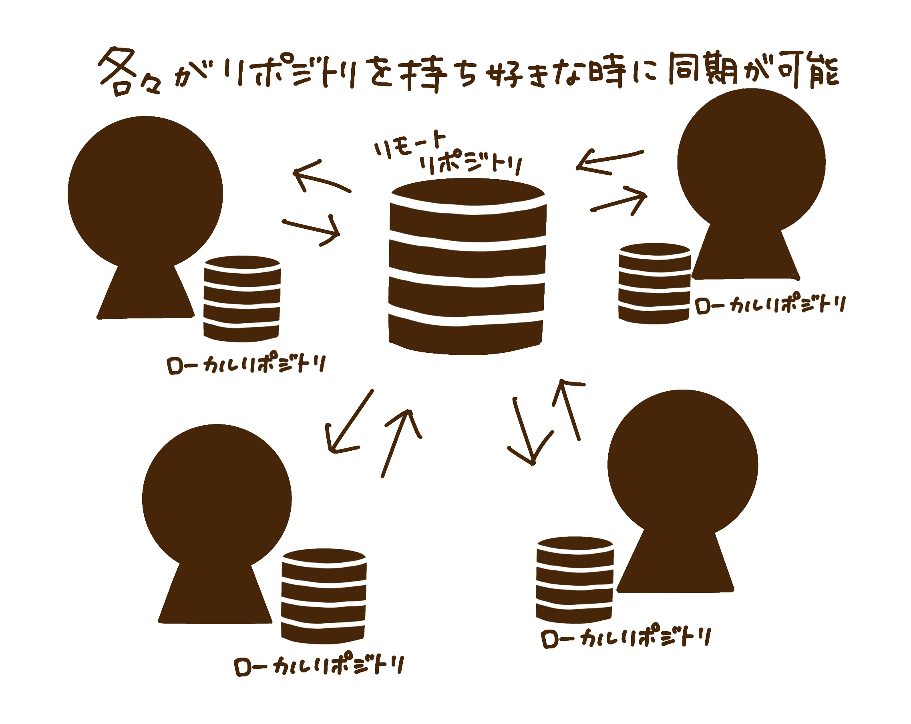
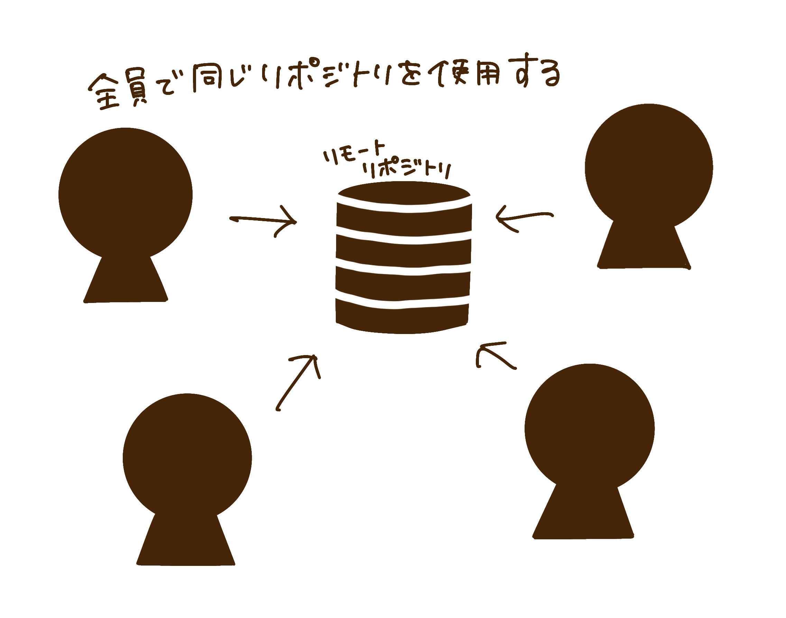
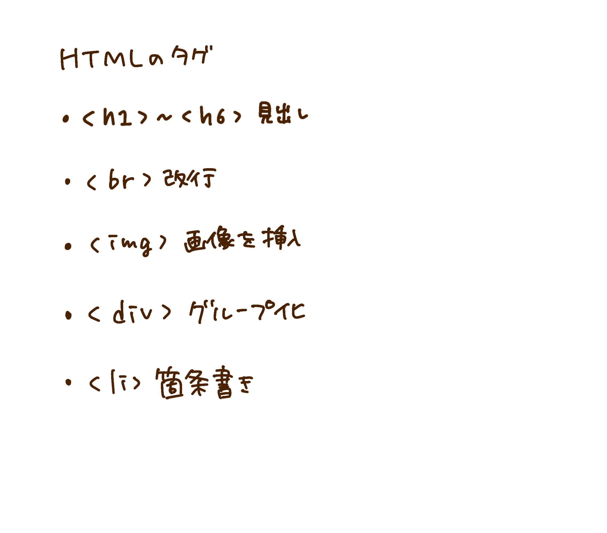
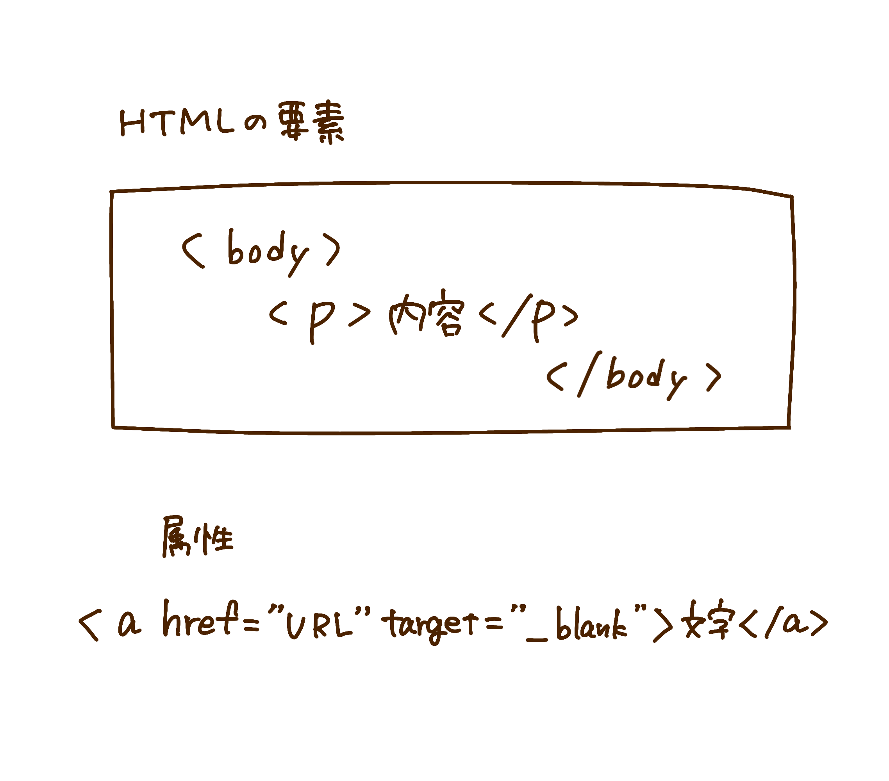

ゲーム作り
gitについて
gitとは
バージョン管理システムの一つ
：バージョン管理システムとは、データ保存の中で誰がいつどこを編集したのか詳しい履歴を保存管理できる仕組みのこと
→つまりgit以外にもバージョン管理システムがある
数あるバージョン管理システムの中でなぜgitが良いのか
リポジトリが「分散型」である点→他のバージョン管理システムは「集中型」であるから
：リポジトリとは、貯蔵庫を意味しデータを保管しておく場所のこと
「分散型」と「集中型」
 
htmlについて
htmlとは
webページを制作するためのマークアップ言語のこと
:マークアップ言語とは、webページ内のテキスト情報の構成や役割をコンピュータが構造的に理解できるようにするためのもの
htmlはタグ・要素・属性の3つで構成されている
タグ：テキストに意味を与える印

要素：Webページを構成するテキスト情報のかたまりを指す用語
属性：個々のタグに特定の性質や動作を与える記述、属性を記述する際はそれに対する「属性値」も記載する

参考サイト
htmlについて
htmlのタグ